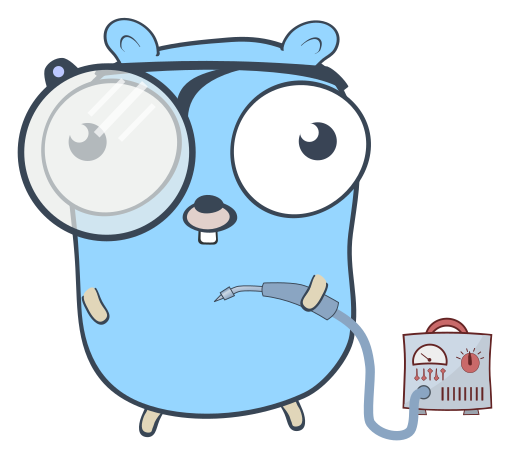

The Daily Go
image by @egonelbre
Miki Tebeka
CEO, CTO, UFO ...Amateurs talk about tactics, but professionals study logistics.
General Robert H. BarrowSoftware Development Logistics
- Project structure
- Managing dependencies
- Documentation
- Testing
- Debugging
- Logging & metrics
- Performance tuning
- Continuous integration
- Development workflow & code reviews
- Deployment strategies
- ...